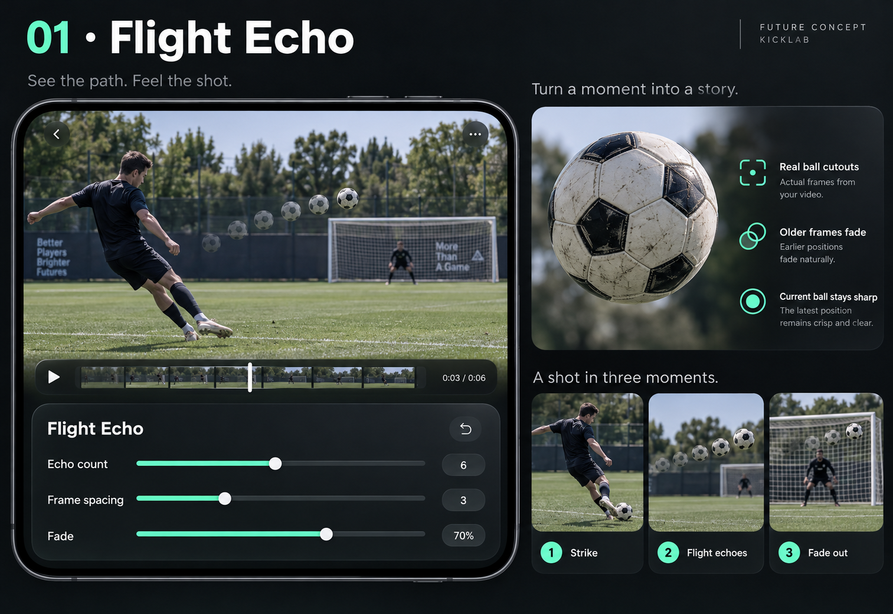
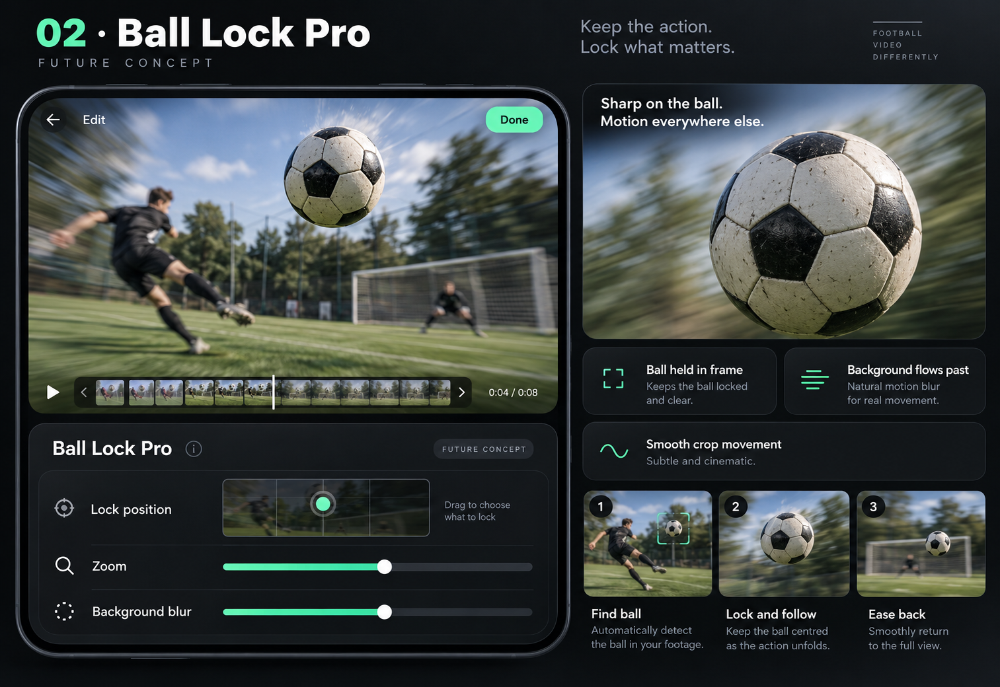
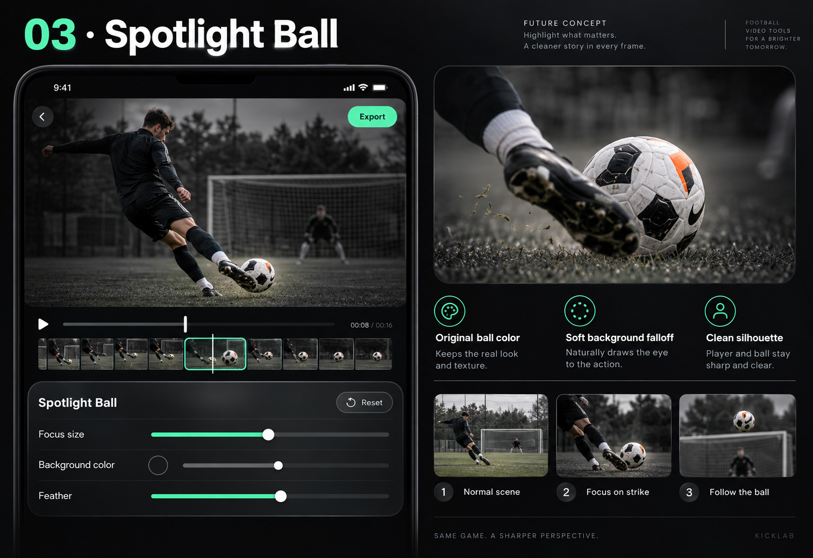
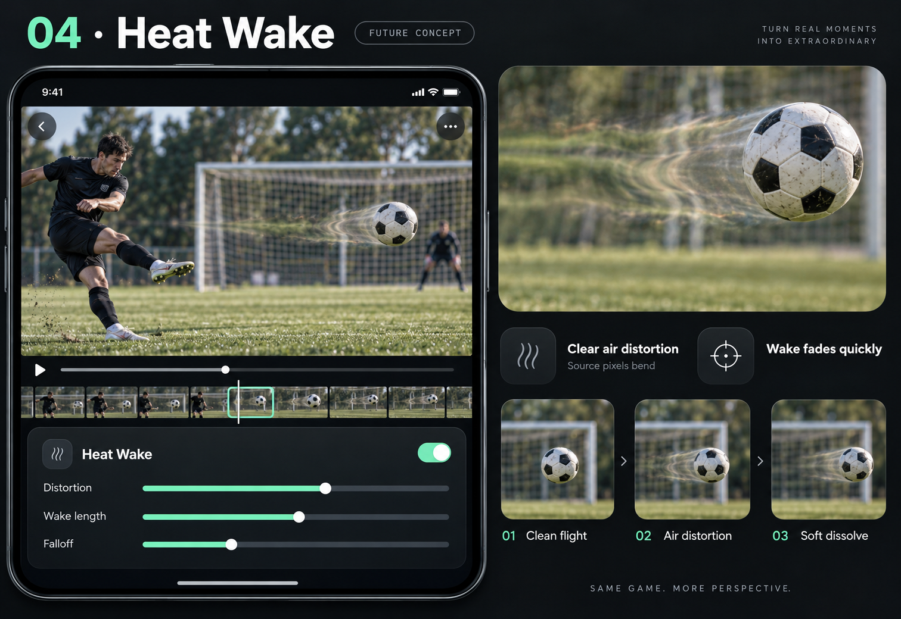
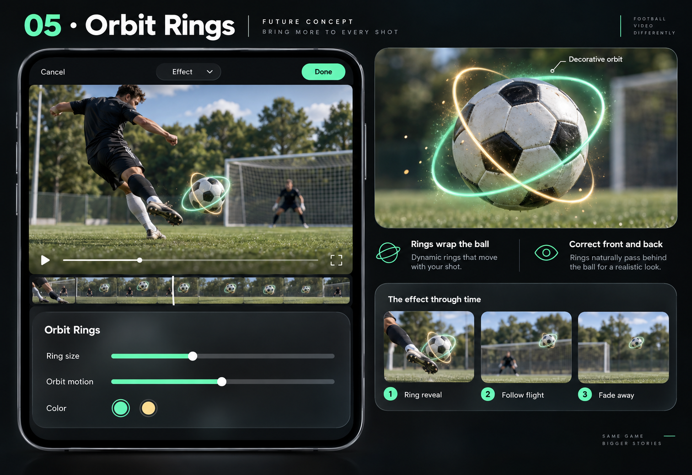
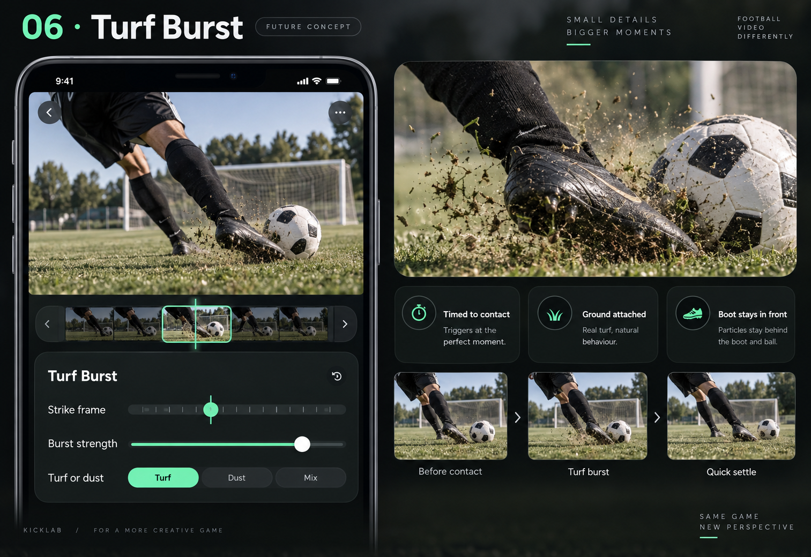
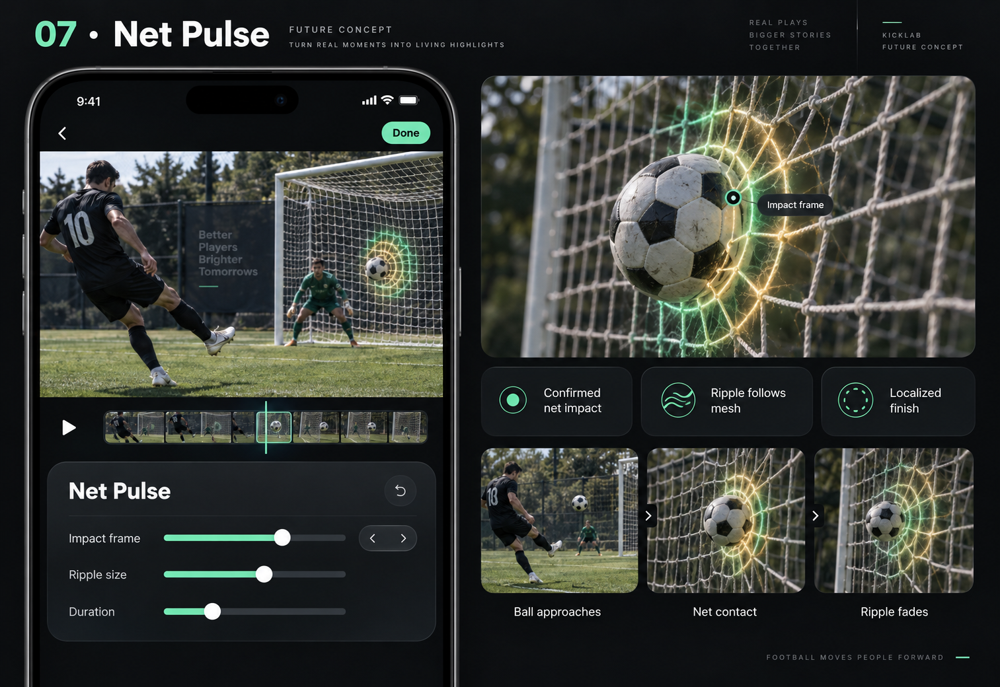
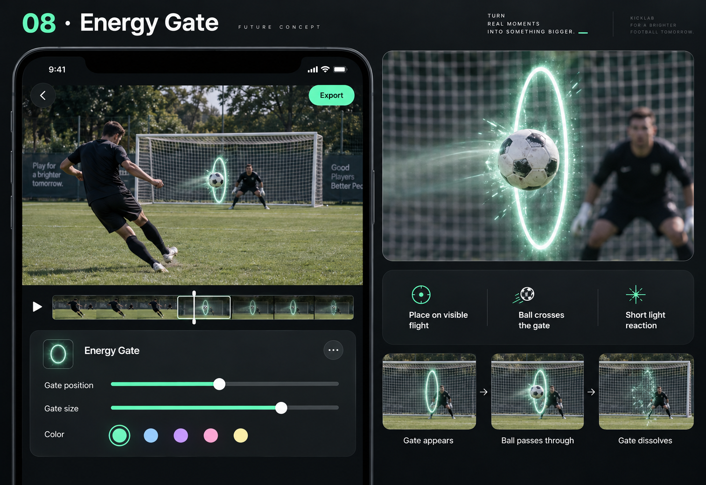
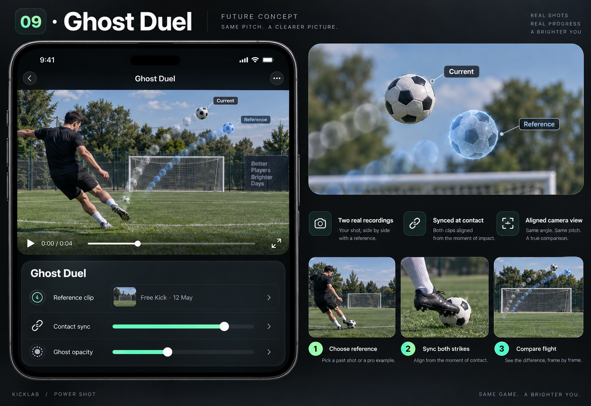
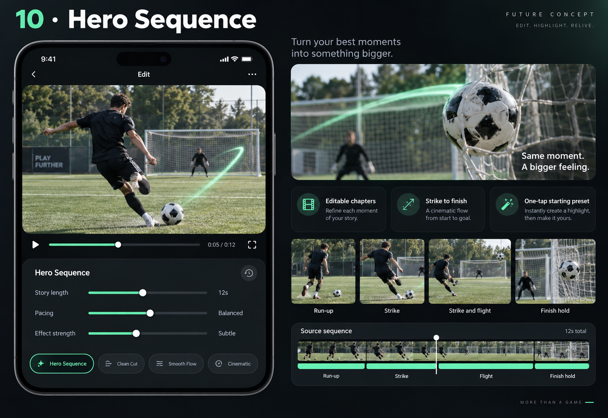

01
Flight Echo

Fading cutouts of the actual ball reveal the observed flight in one cinematic frame.
- Adjust
- Echo count · Frame spacing · Fade
- Needs
- Reliable ball masks and continuous tracked frames.
Detailed visual concepts in Kicklab’s dark glass and mint style. Each board shows the effect, a close-up, its timing and proposed controls. Select a board to open the full image.
Suggested starting three: Flight Echo · Ball Lock Pro · Spotlight Ball

Fading cutouts of the actual ball reveal the observed flight in one cinematic frame.

Keep the ball in a stable screen zone while the recorded background flows past it.

Pull attention toward the ball with color isolation and a soft focus falloff.

A short refractive air wake bends the existing background behind the moving ball.

Decorative light rings wrap around the tracked ball with convincing foreground and background layering.

A tightly timed burst of grass or dust gives the strike a physical punch.

A confirmed net hit sends a controlled light ripple through the goal mesh.

Place an artistic light gate at an observed point in the ball’s flight.

Compare two aligned recordings through synchronized photographic ball ghosts.

An editable highlight preset assembles run-up, strike, flight and finish into a short story.